PROJETOS
Alguns de nossos projetos originais que
foram pensados e desenvolvidos ao longo
de toda a existência do grupo.
HELL-O WORLD foi um projeto desenvolvido
inicialmente como uma piada nos tempos
livres de um curso técnico. O objetivo era ver
se seria possível construir um jogo
multiplayer competitivo 2D em um curto
prazo de tempo.


Criado e desenvolvido por Adrian M Barbosa
O jogo veio a público no dia 7 de agosto de 2024,
com o único modo de jogo “Deathmatch” e
conseguiu ter mais de 500 acessos na
plataforma GX.Games. O jogo foi desenvolvido
no sistema experimental de Rollback Multiplayer
do GameMaker Studio Beta e é possível jogar
com até 4 jogadores.
.png) 



SURV N LIVE ou “Surv N Live: The Game Show” é um
jogo de RPG de Ação narrativa que teve seu
desenvolvimento iniciado em 2022 e continuado
em 2024. Desde então tendo passado por
diversos protótipos e estilos de jogo e narrativa.
Surv N Live é o primeiro jogo da SHARPGEAR a
começar a ser desenvolvido.


Criado e desenvolvido por Adrian M Barbosa

Inicialmente, SURV N LIVE: THE GAME SHOW seria
um jogo multiplayer FFA last standing,
no qual 4 jogadores
teriam que sobreviver por último em
uma ilha com mecânicas de crafting,
fome e frio,
enquanto os personagens estariam fazendo
parte de um reality show.
A ideia foi diretamente
inspirada pelo abandonado jogo “Darwin Project”.


 Sobre
Loja
Projetos
Comunidade
Membros
Biblioteca
+
Sobre
Loja
Projetos
Comunidade
Membros
Biblioteca
+


.png)